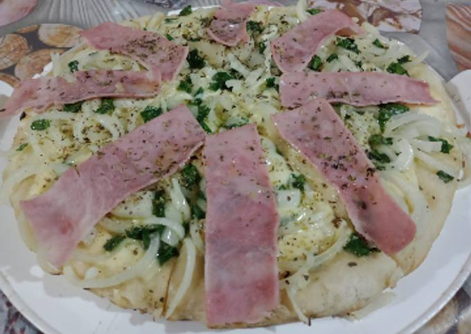

Home
Fugazzetta Pizza with Ham

Description
Delicious and flavorful pizza with a crispy crust and juicy ham. This pizza is perfect for a quick and satisfying meal.
Ingredients
- 100 grams all-purpose flour (000 flour)
- 1/2 teaspoon fine salt, or more to taste
- Large pinch of sugar
- 6 grams fresh yeast
- 1 tablespoon oil
- As needed, warm water
Topping:
- As needed, onion
- 80 grams cooked ham
- As needed, mozzarella cheese
- Salt, pepper, oregano
- Oil
- Grated cheese (optional)
- Olives (optional)
Steps
Preparation of the Topping
This stage focuses on preparing the flavorful onion topping.
- Slice the onions into julienne strips.
- Soak the sliced onions in warm water for a few minutes.
- Place the soaked onions in a colander under cold water.
- Drain the onions thoroughly.
- Place the drained onions in a bowl.
- Season the onions to taste.
- Mix the seasoned onions.
- Add a little oil to the onions.
- Let the seasoned onions rest.
Preparing the Dough
This stage is all about making the pizza dough and letting it rise.
- Take two tablespoons of the 100 grams of flour.
- Crumble the fresh yeast into the two tablespoons of flour.
- Add the remaining flour to the yeast mixture.
- Add the salt and sugar to the flour mixture.
- Mix the dry ingredients together.
- Incorporate the oil into the flour mixture.
- Add warm water gradually to form the dough.
- Knead the dough for several minutes until smooth.
- Place the dough in a warm place.
- Cover the dough with plastic wrap and a kitchen towel.
- Let the dough rest until it doubles in size.
Assembling and Baking the Pizza
This stage involves shaping the pizza, adding toppings, and baking it to perfection.
- Deflate the risen dough.
- Distribute the dough evenly on an oiled pizza pan.
- Turn on the oven.
- Place the covered pizza pan over the stovetop burners (if applicable).
- When the dough leavens again on the pan, distribute grated cheese over the dough.
- Distribute chopped cooked ham over the cheese.
- Distribute mozzarella cheese over the ham.
- Distribute the seasoned onion mixture over the mozzarella.
- Bake in a moderately hot oven.
- For a crispier crust, start baking on the oven floor.
- Be careful not to burn the crust.
- Continue baking in the middle of the oven.
- Continue baking near the top of the oven if desired.
- Add olives to the pizza.
- Turn off the oven.
- Leave the pizza in the oven for a few minutes with the oven off.